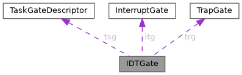

|
My Project
|
#include <interruptions.h>

Attributs publics | |
| TaskGateDescriptor | tsg |
| InterruptGate | itg |
| TrapGate | trg |
Définition à la ligne 44 du fichier interruptions.h.
| InterruptGate IDTGate::itg |
Définition à la ligne 46 du fichier interruptions.h.
| TrapGate IDTGate::trg |
Définition à la ligne 47 du fichier interruptions.h.
| TaskGateDescriptor IDTGate::tsg |
Définition à la ligne 45 du fichier interruptions.h.